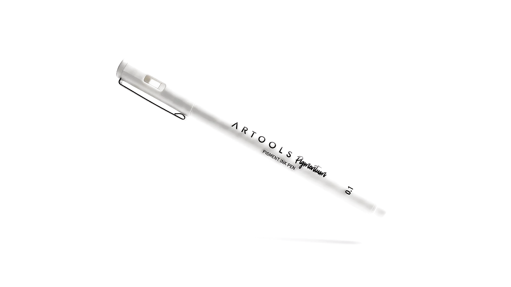
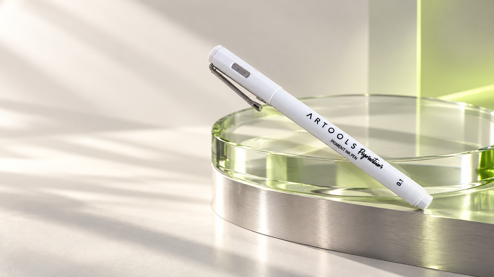

Instantânea.
O pigmento encontra o papel antes que a ideia perca força.

Dê forma ao que ainda só existe em você. Éter é um convite para tirar a próxima grande ideia da cabeça — e deixar sua marca no papel.
Um instrumento desenhado como tecnologia pessoal: silencioso, preciso e absolutamente seu.

A Éter interpreta pressão, ângulo e velocidade para entregar um fluxo contínuo. A resposta acontece no instante — como se a ponta antecipasse a sua intenção.
Microcanais de compensação estabilizam o pigmento em cada direção. Começo imediato, linha uniforme, zero interrupções.
Corpo monobloco em alumínio aeroespacial, anodizado em branco mineral. Leve na mão, sólido na presença.
Geometria cônica de alta precisão com liga de tungstênio polido. Desliza com controle cirúrgico e resposta tátil.
A Éter não pede que você aprenda a usá-la. Ela aprende o seu gesto — e transforma intenção em matéria.
Sensores mecânicos interpretam microvariações do gesto para equilibrar precisão e liberdade em tempo real. Sem telas. Sem menus. Apenas resposta.
O pigmento encontra o papel antes que a ideia perca força.
Centro de gravidade calculado para longas sessões sem fadiga.
Engenharia sofisticada que você percebe sem precisar enxergar.
Éter é um estudo independente de design de produto, identidade e experiência digital. Uma exploração sobre o encontro entre precisão, matéria e gesto.